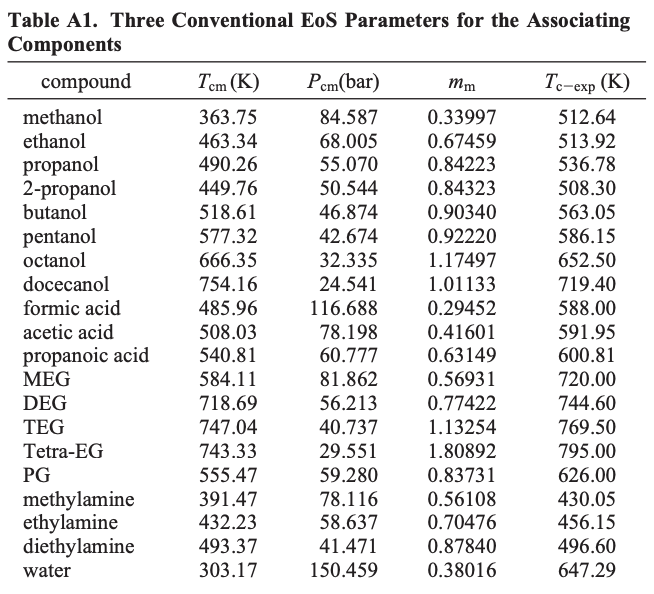
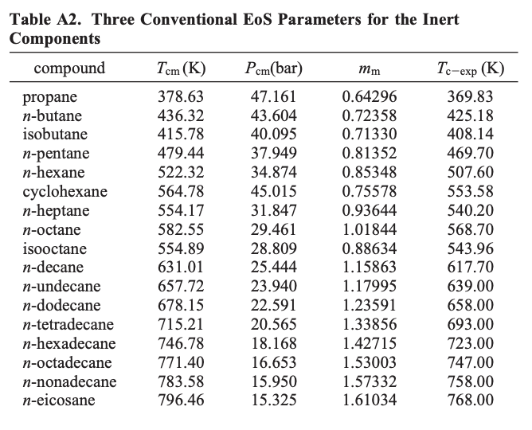
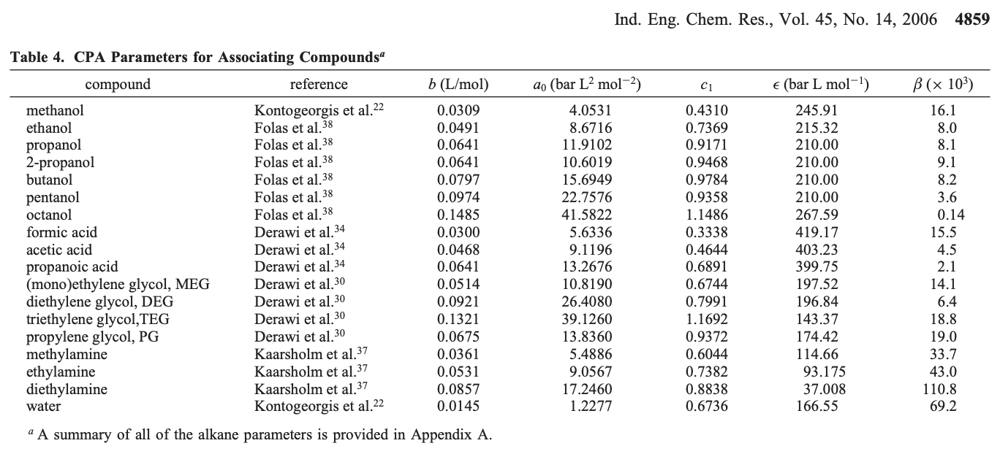
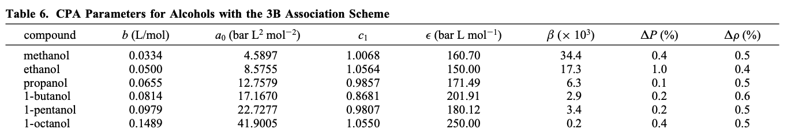
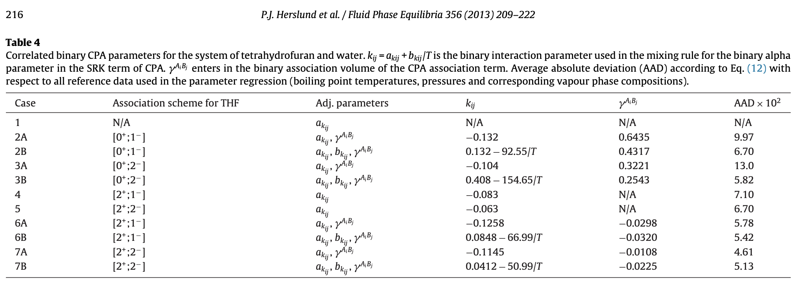
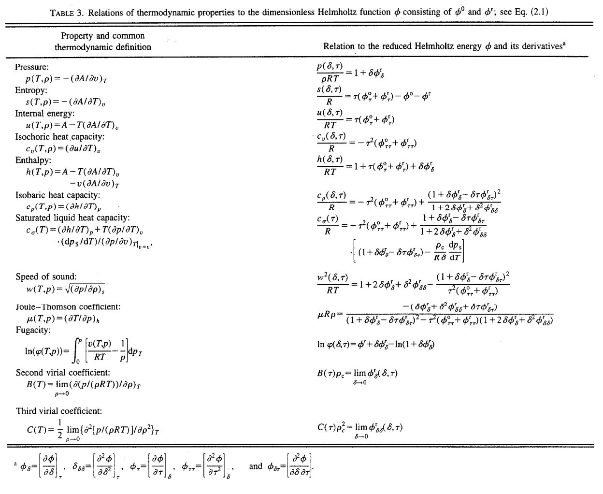

4 Fluid properties
We look up fluid properties from a tab file and we probably don’t have to.
We’ve trained a neural network to predict fluid properties for different compositions and we probably don’t have to do that either.
The neural network was trained on the tab files generated by Multiflash. The tab files are generated by calculating the properties using an equation of state. People publish their equations of state.
It would probably take a day or two (maybe less but probably not significantly more) to implement an equation of state in code. I got most of the way there but didn’t know what some of the parameters were in the first paper I looked at. After more reading it seems doable.
This below sections are largely just highlights from papers.
4.1 CPA
The CPA equation of state presented by Kontogeorgis et al. [19], [20] combines the physical term from the cubic Soave–Redlich–Kwong (SRK) EoS with an association term similar to that found in the statistical associating fluid theory (SAFT) models.
4.1.1 Pressure explicit form
On pressure explicit form, the CPA EoS may be expressed:
P = \frac{R \cdot T}{V_m - b} - \frac{\alpha(T)}{V_m \cdot (V_m + b)} - \frac{R \cdot T}{2 \cdot V_m} \\ \cdot \left[ 1 + \frac{1}{V_m} \cdot \frac{\partial \ln g}{\partial (1/V_m)} \right] \times \sum_i x_i \sum_{A_i} (1 - X_{A_i}) \tag{4.1}
where R is the gas constant and T is temperature. V_m denotes the molar volume, \alpha(T) is the temperature dependent SRK energy parameter and b is the SRK co-volume parameter. g is the hard sphere radial distribution function. A_i denotes association site A on component i. x_i is the mole fraction of component i, X_{A_i} is the fraction of sites, type A on component i not bonded to other sites. CPA simplifies to the SRK EoS for non-associating systems.
The fraction of non-bonded sites, X_{A_i} is estimated by solving Eq 4.2 and Eq 4.3.
X_{A_i} = \left[ 1 + V_m ^{-1} \cdot \sum_j x_j \sum_{B_j} X_{B_j} \cdot \Delta^{A_iB_j} \right] \tag{4.2}
Eq 4.2 is evaluated for all site types on all associating components. The summation over B_j in Eq 4.2 indicates summation over all association sites.
\Delta^{A_iB_j} is the association strength between site A on molecule i and site B on molecule j. It is given by
\Delta^{A_iB_j} = g(V_m)^{ref} \cdot [\exp(\epsilon^{A_iB_j} \cdot (R \cdot T)^{-1}) - 1] \cdot b_{ij} \cdot \beta^{A_iB_j} \tag{4.3}
\epsilon^{A_iB_j} and \beta^{A_iB_j} are the association energy and volume, respectively between site A on molecule i and site B on molecule j. g(V_m)^{ref} is the contact value of the radial distribution function for the reference hard sphere fluid system was presented in a simplified form by Kontogeorgis et al. (sCPA [21]). Whereas earlier versions of CPA utilised the Carnahan–Starling expression for the hard-sphere radial distribution function, sCPA uses the expression shown in Eq 4.4 for the simplified hard-sphere radial distribution function.
g(V_m) = \left[1 - 1.9 \cdot b \cdot (4 \cdot V_m)^{-1}\right]^{-1} \tag{4.4}
The temperature-dependent energy parameter, \alpha_i(T) for pure component i, in the SRK term is calculated by means of Eq 4.5.
\alpha_i(T) = a_{0,i} \cdot \left[ 1 + c_{1,i} \cdot \left( 1 - \sqrt{T \cdot T_{c,i}^{-1}} \right) \right]^2 \tag{4.5}
where a_{0,i} and c_{1,i} are pure component parameters and T_{c,i} is the critical temperature for component i. For associating components, the CPA EoS utilises five pure component parameters, a_{0,i}, b_i, c_{1,i}, \epsilon^{A_iB_i} and \beta^{A_iB_i}. Non-associating components are described by three pure component parameters, a_{0,i}, b_i, c_{1,i}, in a manner similar to that of the “standard” SRK EoS. Pure component parameters for associating components are obtained by fitting the model to experimental vapour pressures and saturated liquid densities of the pure component. The three pure component parameters for non-associating compounds may also be obtained from critical temperature, T_{c,i}, critical pressure, P_{c,i}, and the acentric factor \omega_i.
In binary systems, the van der Waals one-fluid mixing rules are used for evaluating the SRK parameters, \alpha(T) and b. This is done according to Eq 4.6.
\alpha(T) = \sum_i \sum_j x_i \cdot x_j \cdot \alpha_{ij}(T) \tag{4.6}
b = \sum_i x_i \cdot b_i \tag{4.7}
where the “classical” combining rules are applied for the binary \alpha_{ij}(T) in the SRK term and the binary b_{ij} in the association term.
\alpha_{ij}(T) = \sqrt{\alpha_i(T) \cdot \alpha_j(T)} \cdot (1 - k_{ij}) \tag{4.8}
b_{ij} = (b_i + b_j) \cdot 2^{-1} \tag{4.9}
k_{ij} in Eq 4.8 is the binary interaction parameter (BIP) between component i and component j. k_{ij} may be temperature-dependent, e.g. according to the equation k_{ij} = a_{kij} + b_{kij} / T. No mixing rules are needed for the association parameters for CPA. Only for cross associating systems, combining rules must be applied to the two association parameters \epsilon^{A_iB_j} and \beta^{A_iB_j}.
4.1.2 Combining rules
\epsilon^{A_iB_j} = (\epsilon^{A_iB_i} + \epsilon^{A_jB_j}) \cdot 2^{-1} \tag{4.10}
\beta^{A_iB_j} = \sqrt{\beta^{A_iB_i} \cdot \beta^{A_jB_j}} + \gamma^{A_iB_j} \tag{4.11}
The combining rule for \beta^{A_iB_j}, Eq 4.11, has been written in a general form, which handles both cross-association between two self-associating molecules as well as cross-association between one self-associating and one non self-associating molecule (solvation). In the case of cross-association between two self-associating molecules, \gamma^{A_iB_j} may either be set to zero, in order to allow model prediction according to the standard CR1 combining rule, or it can be used as a handle on the deviation of the cross association interactions from the arithmetic mean. In cases with cross-association involving one non self-associating molecule, \gamma^{A_iB_j} is needed to provide cross association interactions. For systems containing three or more components sCPA becomes predictive, since only binary interactions may be accounted for (directly) in the process of parameter estimation.
4.1.2.1 Parameters


Using eqs A.3 and the CPA parameters (a0, bCPA, c1), the “corresponding monomer” parameters can be calculated. This implies that we only need to use the three conventional EoS parameters: the (monomer) critical temperature, pressure, and m-parameters. These parameters are listed in Tables A1 and A2, for associating and inert compounds, respectively. For comparison, the experimental critical temperatures used in CPA are also provided in each table.



4.1.3 Other properties
I don’t know how to turn pressure explicit form of CPA into another form that defines other properties. Those that are defined in terms of Helmholtz free energy seem to be more explicit about the other properties.
Here is a table I found while reading about the Span-Wagner EoS a while ago.

4.2 PC-SAFT
PC-SAFT (perturbed chain SAFT) is an equation of state that is based on statistical associating fluid theory (SAFT).
The equation of state is organized into terms that account for different types of intermolecular interactions, including terms for
- the hard chain reference
- dispersion
- association
- polar interactions
- ions
The equation is most often expressed in terms of the residual Helmholtz energy because all other thermodynamic properties can be easily found by taking the appropriate derivatives of the Helmholtz energy.
a = a^{hc} + a^{disp} + a^{assoc} + a^{dipole} + a^{ion} \tag{4.12}
where a is the molar residual Helmholtz energy.
The below section is all based on this paper.
I haven’t looked too deep into this one but I’m listing it because it can be applied to mixed compositions and is defined in terms of Helmholtz free energy.
In 2001, Gross and Sadowski published an extension of their previous work on the application of the perturbation theory of Barker and Henderson [20] for a hard-chain reference fluid [6] wherein the equation of state was extended to real fluids by optimizing the constants of power series to the experimental vapour pressures and vapour, liquid and supercritical densities of n-alkanes. Before tuning the model constants, the pure component parameters for n-alkane compounds had to be obtained. To do this, a LennardJones perturbing potential was assumed by Gross and Sadowski in Eq. 2.11 and Eq. 2.12 and an expression for the average radial distribution function g(r)^{hc} for hard chains suggested by Chiew [17] was used. They determined the power series 𝐼1 and 𝐼2 for Lennard-Jones-like chains in the next step. The three pure compound parameters m, \sigma and \epsilon of the n-alkanes were subsequently optimised by fitting the EoS to the vapour pressures and saturate liquid densities of n-alkanes. The coefficients a_{0i}, a_{1i}, a_{2i}, b_{0i}, b_{1i}, and b_{2i} were then adjusted to the vapour pressures and liquid, vapour, and supercritical densities of n-alkanes using the optimised pure compound parameters [6].
The final form of the equation of state is expressed as Eq 4.13 which has two contributions to the free Helmholtz energy, hard-chain (or reference fluid) and dispersion contributions.
\frac{a^{res}}{RT} = \frac{a_{Hard chain}}{RT} + \frac{a_{Dispersion}}{RT} \tag{4.13}
where the hard chain contribution to the residual Helmholtz free energy and the dispersion term are calculated using Eq 4.14 to Eq 4.18
\frac{a_{Hard chain}}{RT} = m \frac{a_{Hard sphere}}{RT} + \frac{a_{chain}}{RT} \tag{4.14}
\frac{a_{chain}}{RT} = \sum_i x_i (m_i - 1) \ln g_{ii}^{hs} \tag{4.15}
In Eq 4.15, x_i is the component mole fraction, m_i is the segment number of component i and g_{ii}^{hs} is the radial pair distribution function of segments of component i in the hard sphere system. The hard sphere contribution to the Helmholtz free energy and the radial distribution function are given by Eq 4.16 and Eq 4.17 which are calculated using the radial distribution function and compressibility factor of a hard sphere mixture proposed by Boublik [14] and Mansoori et al. [15]
\frac{a_{hs}}{RT} = \frac{1}{\zeta_0} \left[ \frac{3 \zeta_1 \zeta_2}{(1 - \zeta_3)} + \frac{\zeta_2^3}{\zeta_3 (1 - \zeta_3) ^2} + (\frac{\zeta_2^3}{\zeta_3^2} - \zeta_3) \ln(1-\zeta_3) \right] \tag{4.16}
g_{ij}^{hs} = \frac{1}{(1 - \zeta_3)} + \left( \frac{d_id_j}{d_i + d_j} \right) \frac{3 \zeta_2}{(1 - \zeta_3)^2} + \left( \frac{d_id_j}{d_i + d_j} \right)^2 \frac{2 \zeta_2^2}{(1 - \zeta_3)^2} \tag{4.17}
\zeta_n = \frac{\pi}{6} \rho \sum_i x_i m_i \sigma_i^n \tag{4.18}
\frac{a_{Dispersion}}{RT} = -2 \pi \rho I_1(ŋ, \bar{m})\overline{m^2 \epsilon \sigma^3} - \pi \rho \bar{m} C_1 I_2(ŋ, \bar{m}) \overline{m^2 \epsilon^2 \sigma^3} \tag{4.19}
The van der Waals mixing rules are applies to account for unlike segments interactions in \overline{m^2 \epsilon \sigma^3} and \overline{m^2 \epsilon^2 \sigma^3} abbreviations. I_1 and I_2 expressions are calculated using Eq 4.20 and Eq 4.21
I_1(ŋ, \bar{m}) = \sum_{n=1}^6 a_i(m) ŋ^n \tag{4.20}
I_2(ŋ, \bar{m}) = \sum_{n=1}^6 b_i(m) ŋ^n \tag{4.21}
\overline{m^2 \epsilon \sigma^3} = \sum_i \sum_j x_i x_j m_i m_j (\frac{\epsilon_{ij}}{kT}) \sigma_{ij}^3 \tag{4.22}
\overline{m^2 \epsilon^2 \sigma^3} = \sum_i \sum_j x_i x_j m_i m_j (\frac{\epsilon_{ij}}{kT})^2 \sigma_{ij}^3 \tag{4.23}
\bar{m} = \sum_i x_i m_i \tag{4.24}
...
4.2.1 Parameters


4.2.2 Calculation of Second Thermodynamic Derivative Properties
Villiers et al. [368] applied SAFT, CPA and the sPC-SAFT equation of states to test the ability of these models to predict heat capacities, pressure–volume derivative, pressure–temperature derivative and speed of sound of n-alkanes and 1-acohols.
It can be computationally intensive to numerically calculate the derivatives of the necessary terms to reasonable accuracy, so the paper includes analytical expressions for them.